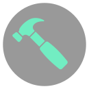
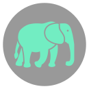

If you’re here trying to find a better alternative to tracking team progress and maximizing transparency, look no more. In this article you will learn how to build, track, and retain using your first Twigflo mission.
Before we jump in, let’s talk about missions. What is a mission? We define a mission as a specific task with which a person or group is charged with completing. Each mission has a goal that is determined at the genesis of the mission. For example, a PR team takes on a new client that needs help in the media space. In order to execute, the PR team determines that their goal is to develop a media relations strategy for their client. Traditionally, the PR team might have used lists, gantts, timelines, and statuses to track, execute, and deliver the strategy. However, Twigflo will allow the PR team to build a connected mission to communicate responsibilities and dependencies with ease.
Workitem toolbar:
Add connected:
Create button:
Go to Terms to learn more about the different types of workitems.
- Read
- Edit
- Delete
- Manage
Connect work items: alt or option + left click and drag
Delete existing connection: shift + left click and drag
Choosing a process taxonomy is tough, so we made it simple. Agile terms have been used by product teams for more than 3 decades, and they work. Each term has concrete meaning removing all ambiguity to what it may mean. Below we will explain these terms.
 Small - least level of effort. Typically multiple tasks can be done on any given day. Use tasks for short-term accomplishments such as drafting a report, sending correspondence, etc. Keep in mind that multiple tasks can make up a Story.
Medium - medium level of effort. Stories are meant to act as significant deliverables such as the final delivery of a report. Use stories to make up the accomplishment of an epic.
 Giant - highest level of effort. Epics are made up of many stories and can take anywhere from 1-3 weeks to accomplish. Epics are not meant to replace missions. You can have multiple epics in a mission.
Contact feedback@twigflo.com with any questions.